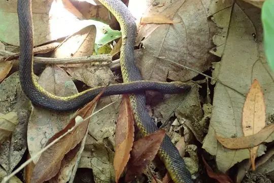
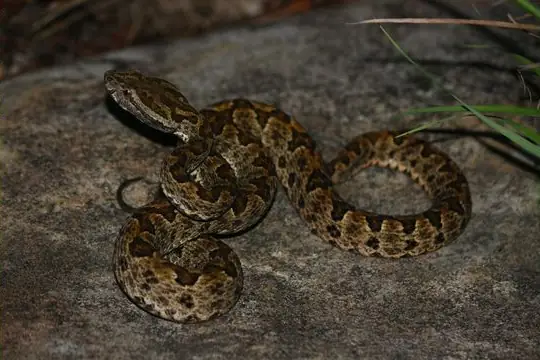
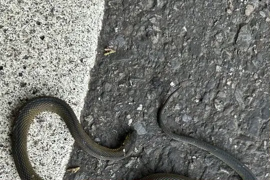
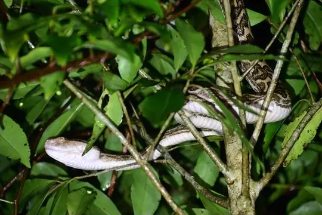
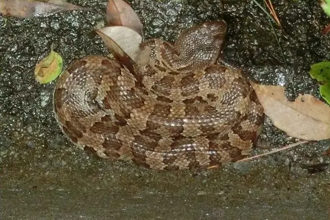
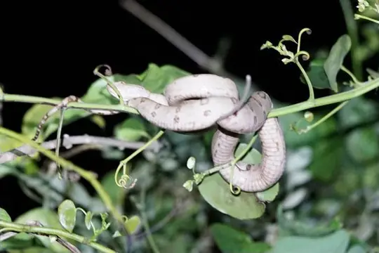
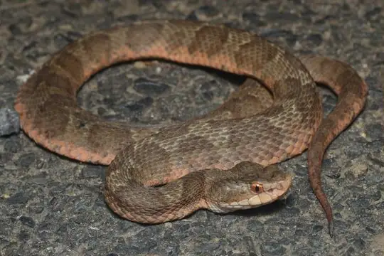

Snakes of Japan
36 snake species are recorded in Japan in SnakeList: 16 venomous and 20 non-venomous, from 5 families.
- 36species
- 16venomous
- 20non-venomous
- 5families
These totals count the snakes SnakeList records as living in Japan. A species counts if it is recorded anywhere in the country, so not every snake lives in every region.
Species
Showing 36 species

Amami Takachiho SnakeAchalinus werneri Annulated Sea SnakeHydrophis cyanocinctus
Annulated Sea SnakeHydrophis cyanocinctus Cave RacerElaphe taeniura
Cave RacerElaphe taeniura Chinese Sea SnakeLaticauda semifasciata
Chinese Sea SnakeLaticauda semifasciata Collared Reed Snake (pavimentata)Calamaria pavimentata
Collared Reed Snake (pavimentata)Calamaria pavimentata Common Bamboo ViperCraspedocephalus gramineus
Common Bamboo ViperCraspedocephalus gramineus Common sea kraitLaticauda laticaudata
Common sea kraitLaticauda laticaudata
Elegant PitviperProtobothrops elegans
Formosa Odd-scaled SnakeAchalinus formosanus Formosa Wolf SnakeLycodon ruhstrati
Formosa Wolf SnakeLycodon ruhstrati
HabuProtobothrops flavoviridis Ijima's sea snakeEmydocephalus ijimae
Ijima's sea snakeEmydocephalus ijimae Iwasaki's Snail-eaterPareas iwasakii
Iwasaki's Snail-eaterPareas iwasakii Japanese Coral SnakeSinomicrurus japonicus
Japanese Coral SnakeSinomicrurus japonicus Japanese Four-lined RatsnakeElaphe quadrivirgata
Japanese Four-lined RatsnakeElaphe quadrivirgata Japanese KeelbackHebius vibakari
Japanese KeelbackHebius vibakari Japanese RatsnakeElaphe climacophora
Japanese RatsnakeElaphe climacophora Japanese WoodsnakeEuprepiophis conspicillata
Japanese WoodsnakeEuprepiophis conspicillata Kikuzato's Brook SnakeOpisthotropis kikuzatoi
Kikuzato's Brook SnakeOpisthotropis kikuzatoi MacLelland's Coral SnakeSinomicrurus macclellandi
MacLelland's Coral SnakeSinomicrurus macclellandi MamushiGloydius blomhoffii
MamushiGloydius blomhoffii Miyako KellbackHebius concelarus
Miyako KellbackHebius concelarus
Okinawa PitviperOvophis okinavensis Oriental Odd-tooth SnakeLycodon orientalis
Oriental Odd-tooth SnakeLycodon orientalis Ornate Sea SnakeHydrophis ornatus
Ornate Sea SnakeHydrophis ornatus Pfeffer's Reed SnakeCalamaria pfefferi
Pfeffer's Reed SnakeCalamaria pfefferi Pryer's KeelbackHebius pryeri
Pryer's KeelbackHebius pryeri Ryukyu Green SnakePtyas semicarinata
Ryukyu Green SnakePtyas semicarinata Ryukyu Odd-tooth snakeLycodon semicarinatus
Ryukyu Odd-tooth snakeLycodon semicarinatus Ryukyu Wolf SnakeLycodon multifasciatus
Ryukyu Wolf SnakeLycodon multifasciatus Sakishima Green SnakePtyas herminae
Sakishima Green SnakePtyas herminae Stoke's SeasnakeHydrophis stokesii
Stoke's SeasnakeHydrophis stokesii
Tokara HabuProtobothrops tokarensis
Tsushima Island PitviperGloydius tsushimaensis Yaeyama KeelbackHebius ishigakiensis
Yaeyama KeelbackHebius ishigakiensis Yellow-bellied Sea SnakeHydrophis platurus
Yellow-bellied Sea SnakeHydrophis platurus
No snakes in Japan match.
Japan’s snakes in numbers
- Families: Colubridae 17, Elapidae 9, Viperidae 7, Xenodermidae 2, Pareidae 1.
- 18 are recorded in no other country in SnakeList: Amami Takachiho Snake, Elegant Pitviper, Habu, Iwasaki's Snail-eater, Japanese Coral Snake, Japanese Four-lined Ratsnake, Kikuzato's Brook Snake, Miyako Kellback, Okinawa Pitviper, Pfeffer's Reed Snake, Pryer's Keelback, Ryukyu Green Snake and 6 more.
States and provinces
The states and provinces where SnakeList records snakes, with how many species each has. Each page has its families, venomous snakes, the species found only there, its cities and neighbours.
- Aichi Prefecture 5 species
- Akita Prefecture 3 species
- Aomori Prefecture 3 species
- Chiba Prefecture 3 species
- Ehime Prefecture 5 species
- Fukui Prefecture 4 species
- Fukuoka Prefecture 4 species
- Fukushima Prefecture 3 species
- Gifu Prefecture 5 species
- Gunma Prefecture 3 species
- Hiroshima Prefecture 3 species
- Hokkaidō 3 species
- Hyōgo Prefecture 4 species
- Ibaraki Prefecture 3 species
- Ishikawa Prefecture 3 species
- Iwate Prefecture 3 species
- Kagawa Prefecture 2 species
- Kagoshima Prefecture 6 species
- Kanagawa Prefecture 5 species
- Kōchi Prefecture 5 species
- Kumamoto Prefecture 2 species
- Kyōto Prefecture 5 species
- Mie Prefecture 4 species
- Miyagi Prefecture 4 species
- Miyazaki Prefecture 2 species
- Nagano Prefecture 4 species
- Nagasaki Prefecture 4 species
- Nara Prefecture 5 species
- Niigata Prefecture 4 species
- Ōita Prefecture 2 species
- Okayama Prefecture 3 species
- Okinawa Prefecture 20 species
- Ōsaka Prefecture 4 species
- Saga Prefecture 1 species
- Saitama Prefecture 5 species
- Shiga Prefecture 4 species
- Shimane Prefecture 3 species
- Shizuoka Prefecture 4 species
- Tochigi Prefecture 3 species
- Tokushima Prefecture 3 species
- Tokyo 5 species
- Tottori Prefecture 4 species
- Toyama Prefecture 4 species
- Wakayama Prefecture 4 species
- Yamagata Prefecture 2 species
- Yamaguchi Prefecture 4 species
- Yamanashi Prefecture 4 species
No place matches that.
Cities
Its biggest cities, biggest first. Snakes are recorded by state or province, not by city, so each city page shows the snakes of the state or province it is in.
- Tokyo Tokyo
- Yokohama Kanagawa Prefecture
- Osaka Ōsaka Prefecture
- Nagoya Aichi Prefecture
- Sapporo Hokkaidō
- Kobe Hyōgo Prefecture
- Kyoto Kyōto Prefecture
- Fukuoka Fukuoka Prefecture
- Kawasaki Kanagawa Prefecture
- Saitama Saitama Prefecture
- Hiroshima Hiroshima Prefecture
- Yono Saitama Prefecture
- Sendai Miyagi Prefecture
- Kitakyushu Fukuoka Prefecture
- Chiba Chiba Prefecture
- Sakai Ōsaka Prefecture
- Shizuoka Shizuoka Prefecture
- Kumamoto Kumamoto Prefecture
- Okayama Okayama Prefecture
- Hamamatsu Shizuoka Prefecture
- Hachiōji Tokyo
- Honchō Chiba Prefecture
- Kagoshima Kagoshima Prefecture
- Niigata Niigata Prefecture
- Himeji Hyōgo Prefecture
No place matches that.